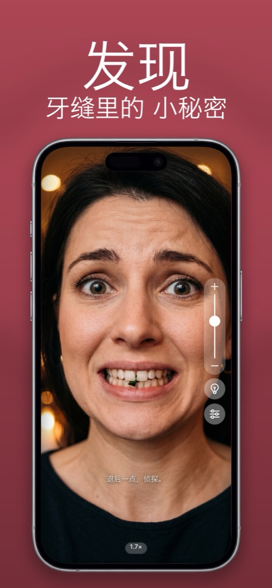

身边没有镜子时，怎么检查牙缝里有没有食物
菠菜、芝麻、一粒黑胡椒——它们偏偏藏在你感觉不到的地方，而接下来一小时里和你说话的每个人都看得见。下面是无论身在何处都能几秒钟检查一遍的方法。
快速但不靠谱的办法
- 舌头扫一遍：用舌头用力扫过上下牙的前面。能扫掉大块的，但贴在牙釉质上或卡在牙缝里的漏得干净。
- 用水漱口：含一口水用力漱，能冲掉大部分松动的碎屑。但不会告诉你有没有成功。
- 问别人：可靠——前提是你不介意对同事龇牙。
- 黑掉的手机屏幕：锁屏的反光太暗，看不清牙缝。
可靠的办法：前置摄像头，放大，光线充足
把 iPhone 前置摄像头放大到 1.5–2 倍，脸上打着光，看到的比浴室镜子还多——牙缝和牙龈线都能看清。相机 App 也能做到，但你的相册里会多一张自己咬牙的照片。镜子 App 则什么都不保存。
该看哪里
大笑，然后掀起上唇、拉下下唇。检查前面六颗牙之间、牙龈线和嘴角（口红和酱汁都堆在那里）。十秒，搞定。
下次怎么预防
包里或办公桌抽屉里备好牙线棒，午饭配水喝。绿叶菜、各种籽和带香草的东西是惯犯。
在 Mirrorly 里怎么做
在 Mirrorly 里，整个检查大约十秒：
- 打开 Mirrorly——立刻就是全屏镜子。
- 把缩放滑块拖到大约 2 倍（或双指捏合）。
- 房间暗就点一下灯泡，这样能看清牙缝。
- 大笑，检查上排和下排，再看嘴角。
- 关掉 App。你牙齿的照片不存在于任何地方。（不过镜子可能会说一句——「退后一点，侦探。」）

Mirrorly 可在 App Store 免费试用。 iPhone 全屏镜子，带环形补光、缩放和最高亮度。免费检查三次，之后一次性购买——没有订阅，不保存照片，无需账号，没有广告。